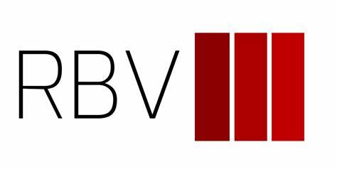

Work Experience
Capital Markets Analyst
Nectar • 10/2024 - Present
Atlanta, USA (Remote)
- Transitioned reporting to InvestNext and Quickbase
- Built and maintained models for evaluating IRR, NPV and sensitivity analysis
- Tracked investor contributions, distributions, and commitments

Data Analyst
FSI Outsourcing • 05/2024 - Present
Lusaka, Zambia
- Automated ETL pipelines using Python and SQL
- Developed reporting tools and visualizations
- Delivered strategic insights to client teams
Senior Support Specialist
Yango Deli • 03/2023 - 05/2024
Lusaka, Zambia (Remote)
- Handled escalations and ensured high satisfaction rates
- Provided product support and resolved customer queries
- Optimized CRM processes and improved response efficiency

Data Analytics Trainee
Red Black Ventures • 09/2022 - 03/2023
Lusaka, Zambia
- Supported portfolio analysis and business intelligence
- Performed data wrangling and exploratory analysis using Excel
- Assisted in investment pitch preparation
Education
Bachelor of Science in Economics
The Copperbelt University • 2018 - 2022
Kitwe, Zambia
- Proficiency in STATA and SPSS
- Core focus in econometrics, statistics, and finance
- Led university analytics club and research events
GCSE Certificate
David Kaunda National Technical School • 2014 - 2016
Lusaka, Zambia
- Best Performing Student - Computer Science (2016)
- Debate Club President
- Best Speaker - OR Tambo Debate (South Africa)